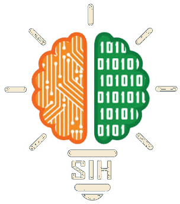
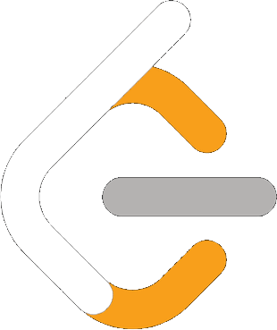
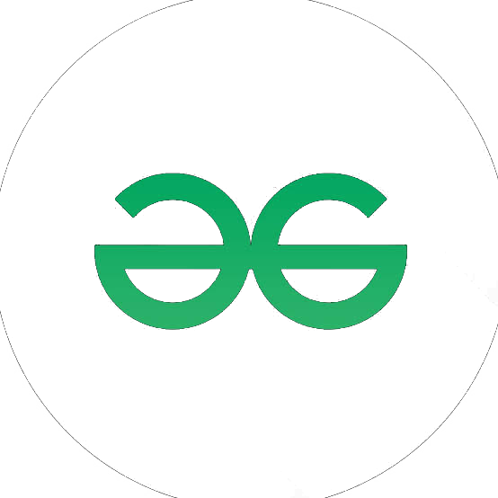

AB
ENGINEER IDPORTFOLIO · 2026
● LIVEICE / NSUT
ARYAN BANSAL
Engineer & Builder
NSUT · NEW DELHIAB / 001
PULL TO SWITCH ON
A small light. A lot of engineering.
Instrumentation & Control Engineering · NSUT Delhi
Instrumentation & Control Engineering student at NSUT, exploring embedded systems, AI/ML and software that connects ideas to the real world.
Class X · 95%
Physics, Chemistry, Mathematics (PCM) · 86.2%
JEE MAIN 2024: 97 percentile
Instrumentation & Control Engineering (ICE) · CGPA 7.8
VISIT NSUT ↗Engineering Intern · Wheel Speed Sensor (WSS) Department
A selection of systems, tools, and ideas I've worked on.
Automated GitHub PR review with three specialized agents running in parallel: Security, Code Quality and Architect.
Google Calendar analytics that detects meeting overload, finds focus blocks and ranks reschedule windows using interval scheduling and a min-heap.
STM32-based embedded controller built around register-level drivers, hardware interfacing and real-time control primitives.
Edge-AI machine health and energy optimisation concept for Indian SMEs, connecting machine degradation to energy waste and downtime.
Finalist

2025Smart India HackathonFinalist
Mentee
Semifinalist

CODING PROFILE200+LeetCodeProblems SolvedVIEW PROFILE ↗
CODING PROFILE50+GeeksforGeeksProblems SolvedVIEW PROFILE ↗